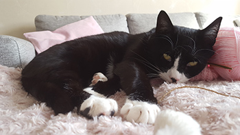

Lucifer- katten som en gång var hemlös
Lucifer kom till oss sommaren 2015. Min bonuspappa hittade honom på sitt landställe i ladan intill hans hus. Vi insåg ganska snabbt att Lucifer inte skulle klara sig eftersom hans ena syskon dog. Så vi bestämde oss för att ta hand om Lucifer om det gick att fånga in honom. Lucifer var smart och lyckades rymma flera gånger när min bonuspappa hade fångat in honom i en låda. Tillslut så fick vi hem en tre månaders kattunge som både hade kattsnuva och var väldigt smutsig. Till en början så var han väldigt rädd för människor och gömde sig under vår soffa i en vecka. Han vågade bara sig fram under natten för att äta eller gå på lådan. Efter en vecka förflyttade han sig till tv bänken där han låg och studerade oss på avstånd. Tillslut så lyckades vi bonda med honom genom lek. Nu är Lucifer en modig katt som tycker om andra människor. Han älskar att hälsa på alla som kommer till oss och mat är det bästa han vet. Han kan flera trick precis som en hund. Bland annat kan han sitta, göra high five, ligga och rulla runt. Han gör vad som helst för att få en liten godbit. Det är nog inte så konstigt med tanke på att han inte hade tillgång till mat innan och fick gå hungrig. Lucifer var hos oss i ett år tills vi beslutade att skaffa en kompis åt honom - Luna.
